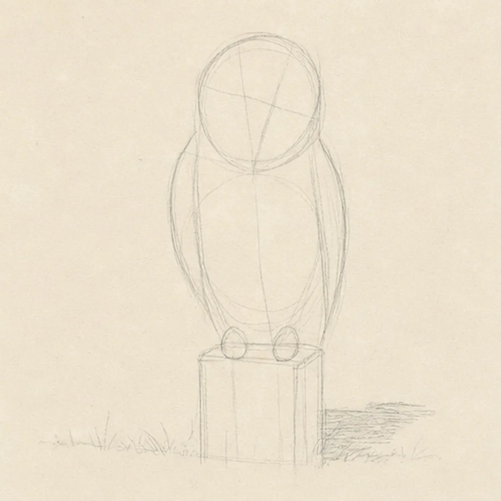
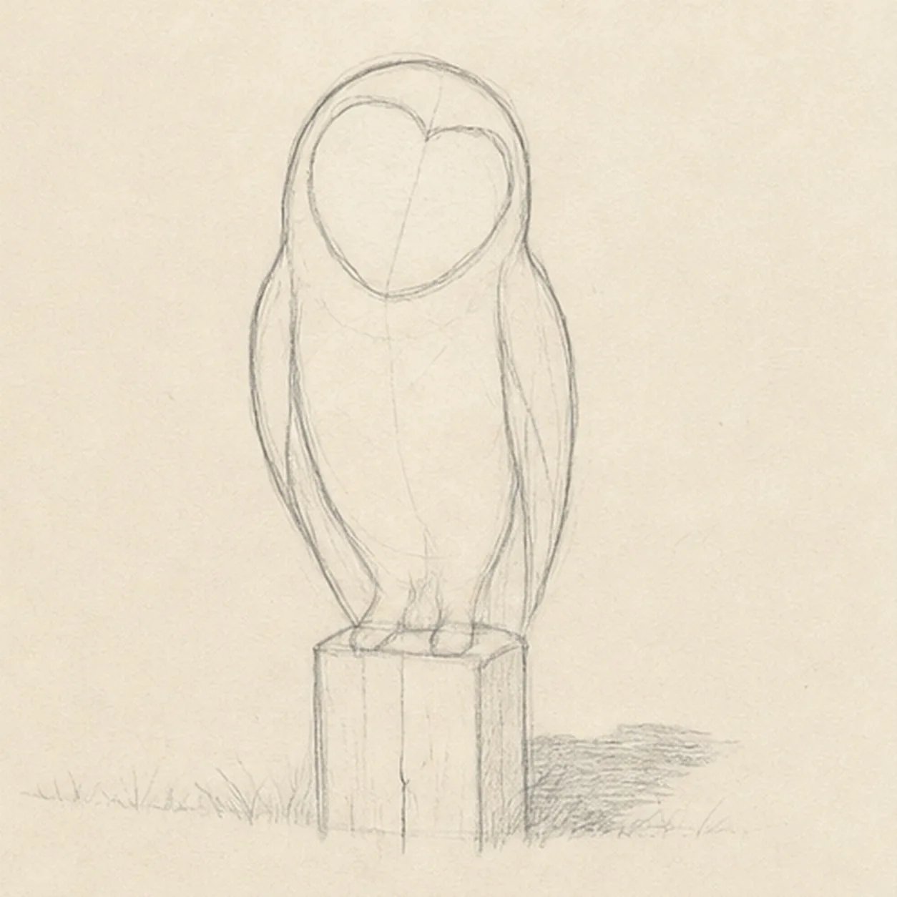
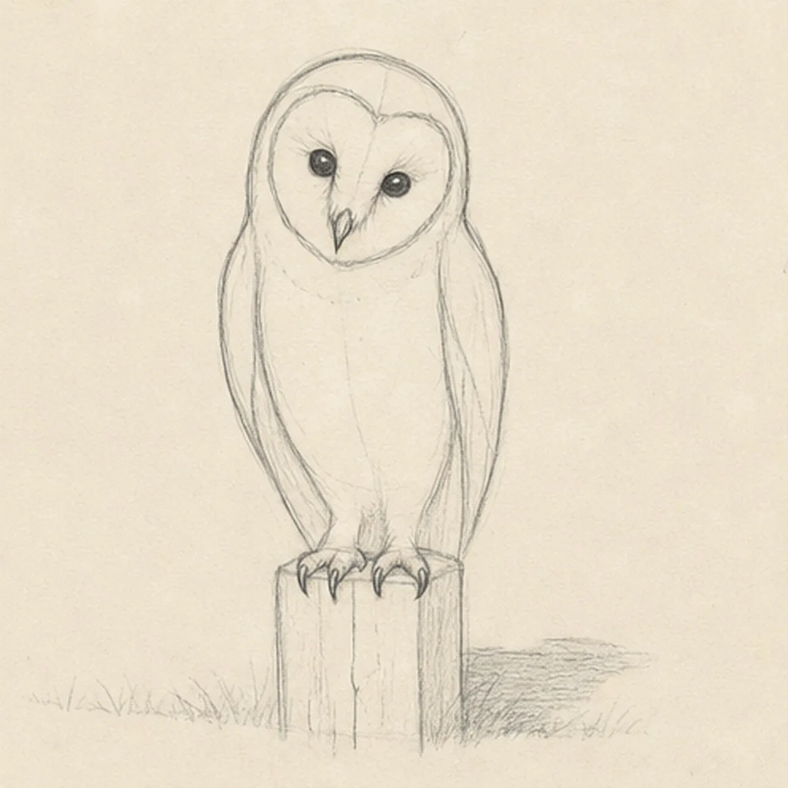
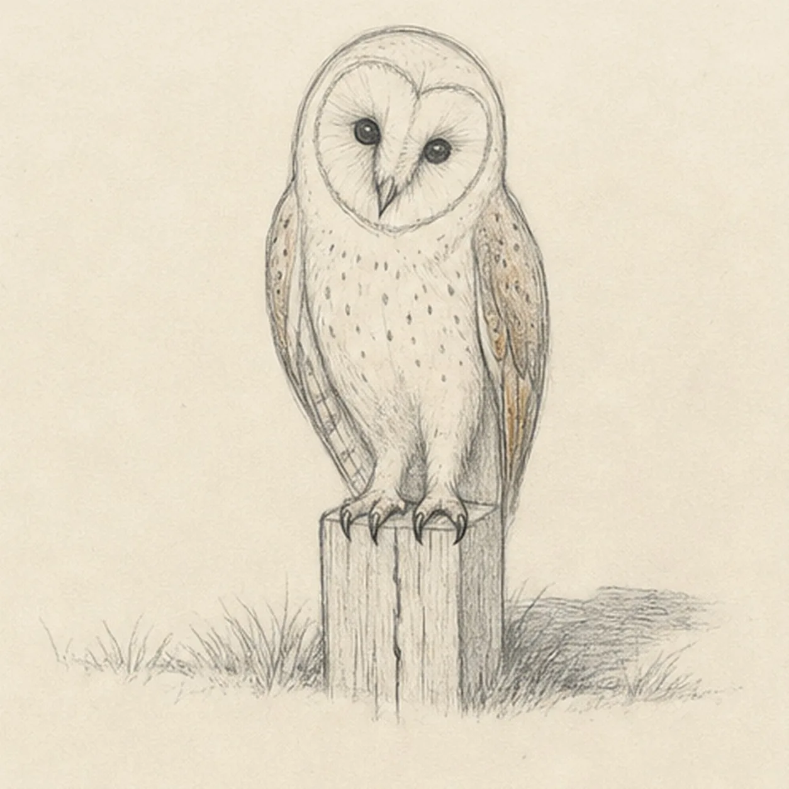
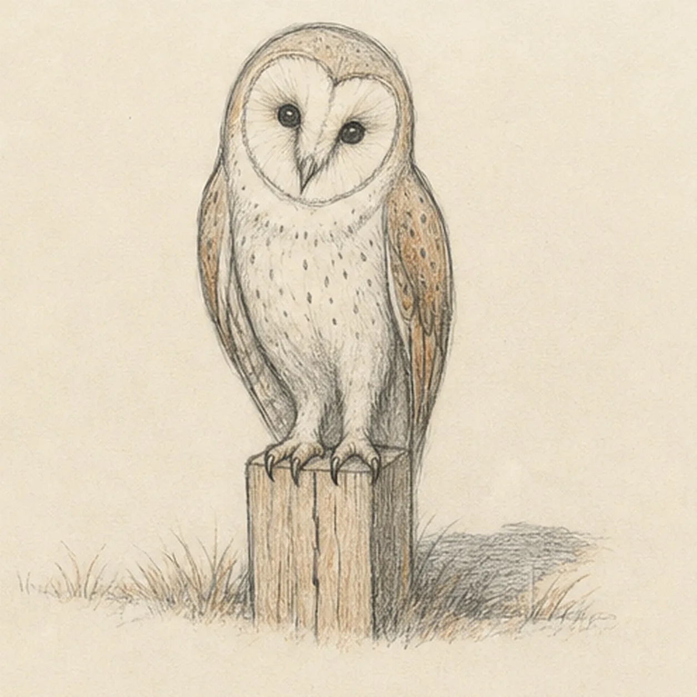

From the archive
Let's draw a barn owl on a fence post
Treat this as one small practice round: build the subject lightly, notice the shapes, then darken only the lines that help the finished sketch.
-
01

Balance the owl and post
Draw a pale tilted head oval over a centered body egg, add a face axis and two folded-wing routes, then mark both feet, the square post top and sides, a low grass line, and one broken shadow footprint.
Sketch tip: Measure the head against the body with your pencil and compare the empty paper on both sides. Keep the foot marks directly over the post top so the owl's weight feels supported from the first pass.
-
02

Shape the owl silhouette
Wrap the guides with the complete owl contour, one heart-shaped facial disk, two folded wings, and the visible top and sides of the weathered fence post.
Sketch tip: Simplify each wing into one long outer arc and one tucked inner edge. Reserve the post top beneath the feet instead of drawing finished wood grain where the talons will cover it.
-
03

Place the face and talons
Add two eyes on the tilted face axis, one small hooked beak, simple brow planes, and two taloned feet curling over the established post top.
Sketch tip: Place the eyes by comparing the paper gaps inside the heart shape, then draw each toe from ankle to claw in one curve. The feet should overlap the post edge rather than sit as flat symbols on top.
-
04

Map feathers and weathered wood
Add broad facial feather rays, grouped wing and chest markings, a few post-grain cracks, sparse grass tufts, and the broken cast shadow.
Sketch tip: Follow the feather direction with short grouped strokes and leave larger quiet areas between them. On the post, pull grain vertically and stop each line when it reaches a talon or the top plane.
-
05

Shade the quiet plumage
Layer graphite into the established plumage, add warm tan and muted rust to the wings and wood, preserve cream paper in the facial disk, and deepen the grass and broken shadow.
Sketch tip: Shade outward from the face and downward along the wings so the strokes describe form. Keep the eyes darkest, then stop before the chest and facial disk lose their pale paper glow.
-
06
Settle the watchful owl
Strengthen selected keeper contours, deepen the established graphite and colored-pencil values, clarify cream highlights, and soften only the construction guides that distract.
Sketch tip: Count one owl, two eyes, two folded wings, and two gripping feet, then trace the silhouette without finding a jump in the pose. Your feather spots and warm colors can vary while the same egg-and-heart construction stays useful.
![Handmade graphite and restrained colored-pencil sketch of one left-facing muted-ochre seahorse with one horse-like head and long snout, one three-point crown ridge, one visible eye, one arched neck and rounded belly, one tapering clockwise-curled tail wrapped exactly once around one teal-green eelgrass stem, one ribbed dorsal fin, exactly two small side fins, exactly seven curved torso plates, exactly five narrow eelgrass leaves, exactly two pale-blue bubbles, exactly two open-paper highlights, visible paper tooth, and one broken cool-gray ground shadow](../assets/seahorse-curled-around-eelgrass-finished-v1.webp)